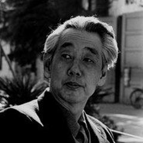

27 directors
Japan
Japanese cinema grew with a benshi tradition of live narrators and a strong studio system. The 1950s were a golden age: Kurosawa and Mizoguchi won international prizes while Ozu refined a quiet domestic style, and the same studios produced Godzilla and a flood of samurai films. The 1960s New Wave challenged tradition, and animation, from Miyazaki to anime features, has since become Japan's most visible film export.
16 major international awards
5 Palme d'Or3 Golden Lion3 Golden Bear5 Oscar, Best International FeatureFamous Directors
 Akira KurosawaJapan
Akira KurosawaJapan Hayao MiyazakiJapan
Hayao MiyazakiJapan Hirokazu Kore-edaJapan
Hirokazu Kore-edaJapan Hiroshi InagakiJapan
Hiroshi InagakiJapan Hiroshi TeshigaharaJapan
Hiroshi TeshigaharaJapan Isao TakahataJapan
Isao TakahataJapan Juzo ItamiJapan
Juzo ItamiJapan Kaneto ShindoJapan
Kaneto ShindoJapan Katsuhiro OtomoJapan
Katsuhiro OtomoJapan Keisuke KinoshitaJapan
Keisuke KinoshitaJapan Kenji MizoguchiJapan
Kenji MizoguchiJapan Kon IchikawaJapan
Kon IchikawaJapan Makoto ShinkaiJapan
Makoto ShinkaiJapan Masahiro ShinodaJapan
Masahiro ShinodaJapan Masaki KobayashiJapan
Masaki KobayashiJapan
Mikio NaruseJapan Naomi KawaseJapan
Naomi KawaseJapan Ryusuke HamaguchiJapan
Ryusuke HamaguchiJapan Satoshi KonJapan
Satoshi KonJapan Seijun SuzukiJapan
Seijun SuzukiJapan Shohei ImamuraJapanTadashi ImaiJapan
Shohei ImamuraJapanTadashi ImaiJapan Takashi MiikeJapan
Takashi MiikeJapanSee all 27 directors


Top films · 243 films
- Seven Samurai 1954 · Akira Kurosawa · IMDb 8.6
- Harakiri 1962 · Masaki Kobayashi · IMDb 8.6
- Spirited Away 2001 · Hayao Miyazaki · IMDb 8.6
- Grave of the Fireflies 1988 · Isao Takahata · IMDb 8.5
- High and Low 1963 · Akira Kurosawa · IMDb 8.4
- Woman in the Dunes 1964 · Hiroshi Teshigahara · IMDb 8.4
- Your Name 2016 · Makoto Shinkai · IMDb 8.4
- Ikiru 1952 · Akira Kurosawa · IMDb 8.3
- Red Beard 1965 · Akira Kurosawa · IMDb 8.3
- Sansho the Bailiff 1954 · Kenji Mizoguchi · IMDb 8.3
- Samurai Rebellion 1967 · Masaki Kobayashi · IMDb 8.3
- Princess Mononoke 1997 · Hayao Miyazaki · IMDb 8.3
- Yojimbo 1961 · Akira Kurosawa · IMDb 8.2
- Dersu Uzala 1975 · Akira Kurosawa · IMDb 8.2
- Ran 1985 · Akira Kurosawa · IMDb 8.2
- Late Spring 1949 · Yasujiro Ozu · IMDb 8.2
- Howl's Moving Castle 2004 · Hayao Miyazaki · IMDb 8.2
- Rashomon 1950 · Akira Kurosawa · IMDb 8.1
- Tokyo Story 1953 · Yasujiro Ozu · IMDb 8.1
- Ugetsu 1953 · Kenji Mizoguchi · IMDb 8.1
- My Neighbor Totoro 1988 · Hayao Miyazaki · IMDb 8.1
- Throne of Blood 1957 · Akira Kurosawa · IMDb 8.0
- The Hidden Fortress 1958 · Akira Kurosawa · IMDb 8.0
- Sanjuro 1962 · Akira Kurosawa · IMDb 8.0
- Early Summer 1951 · Yasujiro Ozu · IMDb 8.0
- Tokyo Twilight 1957 · Yasujiro Ozu · IMDb 8.0
- An Autumn Afternoon 1962 · Yasujiro Ozu · IMDb 8.0
- When a Woman Ascends the Stairs 1960 · Mikio Naruse · IMDb 8.0
- Yearning 1964 · Mikio Naruse · IMDb 8.0
- The Burmese Harp 1956 · Kon Ichikawa · IMDb 8.0
- The Life of Oharu 1952 · Kenji Mizoguchi · IMDb 8.0
- The Naked Island 1960 · Kaneto Shindo · IMDb 8.0
- The Tale of the Princess Kaguya 2013 · Isao Takahata · IMDb 8.0
- Akira 1988 · Katsuhiro Otomo · IMDb 8.0
- Nausicaä of the Valley of the Wind 1984 · Hayao Miyazaki · IMDb 8.0
- Castle in the Sky 1986 · Hayao Miyazaki · IMDb 8.0
- Nobody Knows 2004 · Hirokazu Kore-eda · IMDb 8.0
- Perfect Blue 1997 · Satoshi Kon · IMDb 8.0
- The Bad Sleep Well 1960 · Akira Kurosawa · IMDb 7.9
- Kagemusha 1980 · Akira Kurosawa · IMDb 7.9
- Floating Weeds 1959 · Yasujiro Ozu · IMDb 7.9
- Late Autumn 1960 · Yasujiro Ozu · IMDb 7.9
- Fires on the Plain 1959 · Kon Ichikawa · IMDb 7.9
- Kwaidan 1964 · Masaki Kobayashi · IMDb 7.9
- Twenty-Four Eyes 1954 · Keisuke Kinoshita · IMDb 7.9
- Tampopo 1985 · Juzo Itami · IMDb 7.9
- Shoplifters 2018 · Hirokazu Kore-eda · IMDb 7.9
- Still Walking 2008 · Hirokazu Kore-eda · IMDb 7.9
- Stray Dog 1949 · Akira Kurosawa · IMDb 7.8
- I Was Born, But... 1932 · Yasujiro Ozu · IMDb 7.8
- Equinox Flower 1958 · Yasujiro Ozu · IMDb 7.8
- Good Morning 1959 · Yasujiro Ozu · IMDb 7.8
- Scattered Clouds 1967 · Mikio Naruse · IMDb 7.8
- Street of Shame 1956 · Kenji Mizoguchi · IMDb 7.8
- The Ballad of Narayama (1958) 1958 · Keisuke Kinoshita · IMDb 7.8
- The Ballad of Narayama 1983 · Shohei Imamura · IMDb 7.8
- The Face of Another 1966 · Hiroshi Teshigahara · IMDb 7.8
- Onibaba 1964 · Kaneto Shindo · IMDb 7.8
- Kiki's Delivery Service 1989 · Hayao Miyazaki · IMDb 7.8
- The Wind Rises 2013 · Hayao Miyazaki · IMDb 7.8
- Like Father, Like Son 2013 · Hirokazu Kore-eda · IMDb 7.8
- Monster 2023 · Hirokazu Kore-eda · IMDb 7.8
- Millennium Actress 2001 · Satoshi Kon · IMDb 7.8
- Tokyo Godfathers 2003 · Satoshi Kon · IMDb 7.8
- Dreams (1990) 1990 · Akira Kurosawa · IMDb 7.7
- The Only Son 1936 · Yasujiro Ozu · IMDb 7.7
- Record of a Tenement Gentleman 1947 · Yasujiro Ozu · IMDb 7.7
- Early Spring 1956 · Yasujiro Ozu · IMDb 7.7
- The End of Summer 1961 · Yasujiro Ozu · IMDb 7.7
- Sound of the Mountain 1954 · Mikio Naruse · IMDb 7.7
- Tokyo Olympiad 1965 · Kon Ichikawa · IMDb 7.7
- Pale Flower 1964 · Masahiro Shinoda · IMDb 7.7
- Porco Rosso 1992 · Hayao Miyazaki · IMDb 7.7
- Hana-bi 1997 · Takeshi Kitano · IMDb 7.7
- Kikujiro 1999 · Takeshi Kitano · IMDb 7.7
- Paprika 2006 · Satoshi Kon · IMDb 7.7
- Drunken Angel 1948 · Akira Kurosawa · IMDb 7.6
- A Story of Floating Weeds 1934 · Yasujiro Ozu · IMDb 7.6
- The Flavor of Green Tea over Rice 1952 · Yasujiro Ozu · IMDb 7.6
- Floating Clouds 1955 · Mikio Naruse · IMDb 7.6
- Repast 1951 · Mikio Naruse · IMDb 7.6
- A Geisha 1953 · Kenji Mizoguchi · IMDb 7.6
- Tokyo Trial 1983 · Masaki Kobayashi · IMDb 7.6
- Intentions of Murder 1964 · Shohei Imamura · IMDb 7.6
- Vengeance Is Mine 1979 · Shohei Imamura · IMDb 7.6
- Double Suicide 1969 · Masahiro Shinoda · IMDb 7.6
- Children of Hiroshima 1952 · Kaneto Shindo · IMDb 7.6
- Only Yesterday 1991 · Isao Takahata · IMDb 7.6
- Ponyo 2008 · Hayao Miyazaki · IMDb 7.6
- After Life 1998 · Hirokazu Kore-eda · IMDb 7.6
- Our Little Sister 2015 · Hirokazu Kore-eda · IMDb 7.6
- Happy Hour 2015 · Ryusuke Hamaguchi · IMDb 7.6
- Suzume 2022 · Makoto Shinkai · IMDb 7.6
- There Was a Father 1942 · Yasujiro Ozu · IMDb 7.5
- Mother (1952) 1952 · Mikio Naruse · IMDb 7.5
- Lightning 1952 · Mikio Naruse · IMDb 7.5
- Flowing 1956 · Mikio Naruse · IMDb 7.5
- Rickshaw Man 1958 · Hiroshi Inagaki · IMDb 7.5
- Samurai III: Duel at Ganryu Island 1956 · Hiroshi Inagaki · IMDb 7.5
- Chushingura 1962 · Hiroshi Inagaki · IMDb 7.5
- Death by Hanging 1968 · Nagisa Oshima · IMDb 7.5
- Pitfall 1962 · Hiroshi Teshigahara · IMDb 7.5
- Maborosi 1995 · Hirokazu Kore-eda · IMDb 7.5
- A Scene at the Sea 1991 · Takeshi Kitano · IMDb 7.5
- Dolls 2002 · Takeshi Kitano · IMDb 7.5
- 13 Assassins 2010 · Takashi Miike · IMDb 7.5
- Drive My Car 2021 · Ryusuke Hamaguchi · IMDb 7.5
- Wheel of Fortune and Fantasy 2021 · Ryusuke Hamaguchi · IMDb 7.5
- Weathering with You 2019 · Makoto Shinkai · IMDb 7.5
- Late Chrysanthemums 1954 · Mikio Naruse · IMDb 7.4
- Sisters of the Gion 1936 · Kenji Mizoguchi · IMDb 7.4
- Miss Oyu 1951 · Kenji Mizoguchi · IMDb 7.4
- Samurai I: Musashi Miyamoto 1954 · Hiroshi Inagaki · IMDb 7.4
- Bushido, Samurai Saga 1963 · Tadashi Imai · IMDb 7.4
- Darkness at Noon 1956 · Tadashi Imai · IMDb 7.4
- Boy 1969 · Nagisa Oshima · IMDb 7.4
- Pigs and Battleships 1961 · Shohei Imamura · IMDb 7.4
- I Wish 2011 · Hirokazu Kore-eda · IMDb 7.4
- After the Storm 2016 · Hirokazu Kore-eda · IMDb 7.4
- Sonatine 1993 · Takeshi Kitano · IMDb 7.4
- Kids Return 1996 · Takeshi Kitano · IMDb 7.4
- Zatoichi 2003 · Takeshi Kitano · IMDb 7.4
- Sweet Bean 2015 · Naomi Kawase · IMDb 7.4
- 5 Centimeters per Second 2007 · Makoto Shinkai · IMDb 7.4
- The Garden of Words 2013 · Makoto Shinkai · IMDb 7.4
- A Page of Madness 1926 · Teinosuke Kinugasa · IMDb 7.3
- Dodes'ka-den 1970 · Akira Kurosawa · IMDb 7.3
- Madadayo 1993 · Akira Kurosawa · IMDb 7.3
- Daughters, Wives and a Mother 1960 · Mikio Naruse · IMDb 7.3
- An Actor's Revenge 1963 · Kon Ichikawa · IMDb 7.3
- A Japanese Tragedy 1953 · Keisuke Kinoshita · IMDb 7.3
- Immortal Love 1961 · Keisuke Kinoshita · IMDb 7.3
- Samurai II: Duel at Ichijoji Temple 1955 · Hiroshi Inagaki · IMDb 7.3
- Night Drum 1958 · Tadashi Imai · IMDb 7.3
- The Insect Woman 1963 · Shohei Imamura · IMDb 7.3
- The Eel 1997 · Shohei Imamura · IMDb 7.3
- Youth of the Beast 1963 · Seijun Suzuki · IMDb 7.3
- A Taxing Woman 1987 · Juzo Itami · IMDb 7.3
- Supermarket Woman 1996 · Juzo Itami · IMDb 7.3
- The Boy and the Heron 2023 · Hayao Miyazaki · IMDb 7.3
- Hara-Kiri: Death of a Samurai 2011 · Takashi Miike · IMDb 7.3
- Suzaku 1997 · Naomi Kawase · IMDb 7.3
- The Lower Depths (1957) 1957 · Akira Kurosawa · IMDb 7.2
- Rhapsody in August 1991 · Akira Kurosawa · IMDb 7.2
- The Brothers and Sisters of the Toda Family 1941 · Yasujiro Ozu · IMDb 7.2
- The Makioka Sisters 1983 · Kon Ichikawa · IMDb 7.2
- Osaka Elegy 1936 · Kenji Mizoguchi · IMDb 7.2
- The 47 Ronin 1941 · Kenji Mizoguchi · IMDb 7.2
- Black River 1957 · Masaki Kobayashi · IMDb 7.2
- The Ceremony 1971 · Nagisa Oshima · IMDb 7.2
- Merry Christmas, Mr. Lawrence 1983 · Nagisa Oshima · IMDb 7.2
- Dr. Akagi 1998 · Shohei Imamura · IMDb 7.2
- Branded to Kill 1967 · Seijun Suzuki · IMDb 7.2
- Gate of Flesh 1964 · Seijun Suzuki · IMDb 7.2
- The Funeral (1984) 1984 · Juzo Itami · IMDb 7.2
- Pom Poko 1994 · Isao Takahata · IMDb 7.2
- Crossroads 1928 · Teinosuke Kinugasa · IMDb 7.1
- Gate of Hell 1953 · Teinosuke Kinugasa · IMDb 7.1
- Conflagration 1958 · Kon Ichikawa · IMDb 7.1
- Princess Yang Kwei Fei 1955 · Kenji Mizoguchi · IMDb 7.1
- A Man Vanishes 1967 · Shohei Imamura · IMDb 7.1
- Rikyu 1989 · Hiroshi Teshigahara · IMDb 7.1
- Tokyo Drifter 1966 · Seijun Suzuki · IMDb 7.1
- Assassination 1964 · Masahiro Shinoda · IMDb 7.1
- Silence (1971) 1971 · Masahiro Shinoda · IMDb 7.1
- My Neighbors the Yamadas 1999 · Isao Takahata · IMDb 7.1
- Broker 2022 · Hirokazu Kore-eda · IMDb 7.1
- Violent Cop 1989 · Takeshi Kitano · IMDb 7.1
- Brother 2000 · Takeshi Kitano · IMDb 7.1
- Audition 1999 · Takashi Miike · IMDb 7.1
- Asako I & II 2018 · Ryusuke Hamaguchi · IMDb 7.1
- Alone on the Pacific 1963 · Kon Ichikawa · IMDb 7.0
- Utamaro and His Five Women 1946 · Kenji Mizoguchi · IMDb 7.0
- The Thick-Walled Room 1956 · Masaki Kobayashi · IMDb 7.0
- Empire of Passion 1978 · Nagisa Oshima · IMDb 7.0
- Gonza the Spearman 1986 · Masahiro Shinoda · IMDb 7.0
- Postcard 2010 · Kaneto Shindo · IMDb 7.0
- Embracing 1992 · Naomi Kawase · IMDb 7.0
- True Mothers 2020 · Naomi Kawase · IMDb 7.0
- Evil Does Not Exist 2023 · Ryusuke Hamaguchi · IMDb 7.0
- Voices of a Distant Star 2002 · Makoto Shinkai · IMDb 7.0
- Morning for the Osone Family 1946 · Keisuke Kinoshita · IMDb 6.9
- The Garden of Women 1954 · Keisuke Kinoshita · IMDb 6.9
- Cruel Story of Youth 1960 · Nagisa Oshima · IMDb 6.9
- Fighting Elegy 1966 · Seijun Suzuki · IMDb 6.9
- Zigeunerweisen 1980 · Seijun Suzuki · IMDb 6.9
- Kagero-za 1981 · Seijun Suzuki · IMDb 6.9
- Yumeji 1991 · Seijun Suzuki · IMDb 6.9
- A Quiet Life 1995 · Juzo Itami · IMDb 6.9
- Air Doll 2009 · Hirokazu Kore-eda · IMDb 6.9
- Ichi the Killer 2001 · Takashi Miike · IMDb 6.9
- Gozu 2003 · Takashi Miike · IMDb 6.9
- Passion 2008 · Ryusuke Hamaguchi · IMDb 6.9
- Intimacies 2012 · Ryusuke Hamaguchi · IMDb 6.9
- The Key 1959 · Kon Ichikawa · IMDb 6.8
- Night and Fog in Japan 1960 · Nagisa Oshima · IMDb 6.8
- Taboo 1999 · Nagisa Oshima · IMDb 6.8
- A Last Note 1995 · Kaneto Shindo · IMDb 6.8
- Steamboy 2004 · Katsuhiro Otomo · IMDb 6.8
- Distance 2001 · Hirokazu Kore-eda · IMDb 6.8
- Boiling Point 1990 · Takeshi Kitano · IMDb 6.8
- Outrage 2010 · Takeshi Kitano · IMDb 6.8
- The Place Promised in Our Early Days 2004 · Makoto Shinkai · IMDb 6.8
- Sanshiro Sugata 1943 · Akira Kurosawa · IMDb 6.7
- Warm Water Under a Red Bridge 2001 · Shohei Imamura · IMDb 6.7
- A Taxing Woman's Return 1988 · Juzo Itami · IMDb 6.7
- Lucky Dragon No. 5 1959 · Kaneto Shindo · IMDb 6.7
- The Third Murder 2017 · Hirokazu Kore-eda · IMDb 6.7
- Dead or Alive 1999 · Takashi Miike · IMDb 6.7
- The Mourning Forest 2007 · Naomi Kawase · IMDb 6.7
- Still the Water 2014 · Naomi Kawase · IMDb 6.7
- In the Realm of the Senses 1976 · Nagisa Oshima · IMDb 6.6
- Black Rain 1989 · Shohei Imamura · IMDb 6.6
- Shinjuku Triad Society 1995 · Takashi Miike · IMDb 6.6
- Hanezu 2011 · Naomi Kawase · IMDb 6.6
- Carmen Comes Home 1951 · Keisuke Kinoshita · IMDb 6.5
- The Rose on His Arm 1956 · Keisuke Kinoshita · IMDb 6.5
- The Truth (2019) 2019 · Hirokazu Kore-eda · IMDb 6.5
- Three Resurrected Drunkards 1968 · Nagisa Oshima · IMDb 6.4
- Radiance 2017 · Naomi Kawase · IMDb 6.4
- Mr. Pu 1953 · Kon Ichikawa · IMDb 6.3
- The Three Treasures 1959 · Hiroshi Inagaki · IMDb 6.3
- Pistol Opera 2001 · Seijun Suzuki · IMDb 6.3
- Diary of a Shinjuku Thief 1968 · Nagisa Oshima · IMDb 6.1
- Spy Sorge 2003 · Masahiro Shinoda · IMDb 6.1
- Sukiyaki Western Django 2007 · Takashi Miike · IMDb 6.1
- Mushishi 2006 · Katsuhiro Otomo · IMDb 6.0
- World Apartment Horror 1991 · Katsuhiro Otomo · IMDb 5.9
- Minbo 1992 · Juzo Itami
- Muddy Waters 1953 · Tadashi Imai
- The Great Adventure of Horus, Prince of the Sun 1968 · Isao Takahata
- The Human Condition 1959 · Masaki Kobayashi
- The Castle of Cagliostro 1979 · Hayao Miyazaki
- The Profound Desire of the Gods 1968 · Shohei Imamura
- Under the Cherry Blossoms 1975 · Masahiro Shinoda
- Whirlwind 1964 · Hiroshi Inagaki
- Yukinojo's Revenge 1935 · Teinosuke Kinugasa
- Voices from the Waves 2013 · Ryusuke Hamaguchi
- The Ruined Map 1968 · Hiroshi Teshigahara
- Combustible 2013 · Katsuhiro Otomo
- Kuroneko 1968 · Kaneto Shindo
- The Crucified Lovers 1954 · Kenji Mizoguchi
- Fossils 1975 · Masaki Kobayashi